因为最近一直在玩动森，拜读了吧内Kuroneko66老师的老粉拜吧-关于73动物之森里信息的分析 这篇分析后，佩服老师的分析太细了！
偶然在青山的梦境岛逛时，想去一下蜜雪儿的家，根据Kuroneko66老师的分析，我觉得蜜雪儿=柯南已经没异议了，就补充一点更锤的，我觉得这点也能验证小兰恶魔论
废话不多说先看图
偶然在青山的梦境岛逛时，想去一下蜜雪儿的家，根据Kuroneko66老师的分析，我觉得蜜雪儿=柯南已经没异议了，就补充一点更锤的，我觉得这点也能验证小兰恶魔论
废话不多说先看图
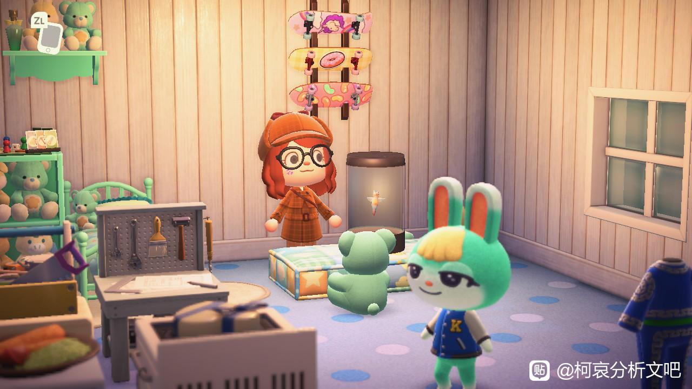
注意看蜜雪儿家的这个海天使，下面先放一下海天使的介绍
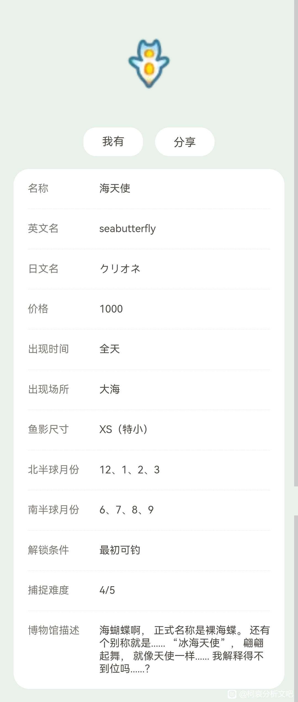
2024-02-26 20:32 | 鄙人是▫:这东西在哪里啊

刚进入蜜雪儿家的时候，我觉得这个海天使有点陌生，因为蜜雪儿家原始布局应该是这样的（如图）应该不是海天使才对
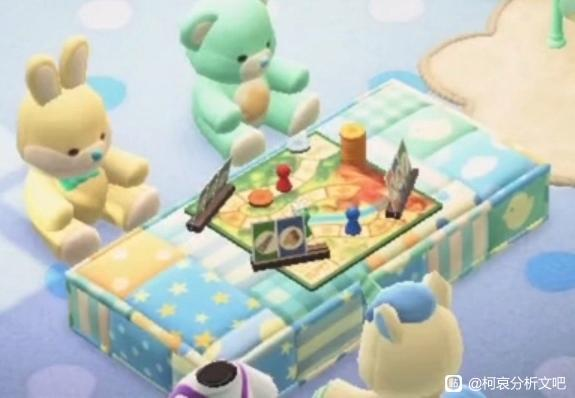
cy
动森的小动物家里某些布局不一样，原因一般是玩家给小动物送了礼物，小动物会把这些小礼物布置在家里，那么这个海天使应该是青山送给蜜雪儿的，所以他家里才会有这个不一样的布置。
看到海天使时，我就想起了一个角色——小兰，柯南（蜜雪儿）家里有小兰？（别急别急我不是sr往下看 ）
）
我突然想起来之前刷到过一个视频（如图）
看到海天使时，我就想起了一个角色——小兰，柯南（蜜雪儿）家里有小兰？（别急别急我不是sr往下看
）我突然想起来之前刷到过一个视频（如图）
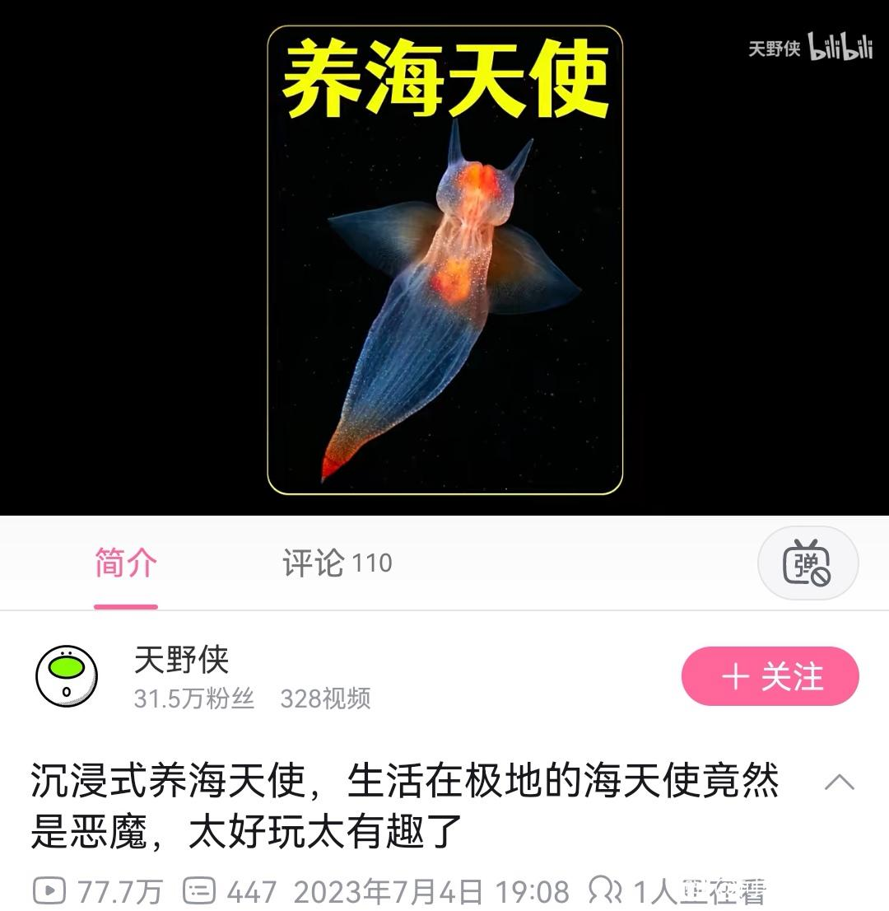
之前就有很多动森玩家说过海天使没有表面上看起来这么可爱，它捕猎时会张开触手，而这个特征动森也还原了（如图）
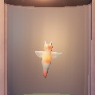
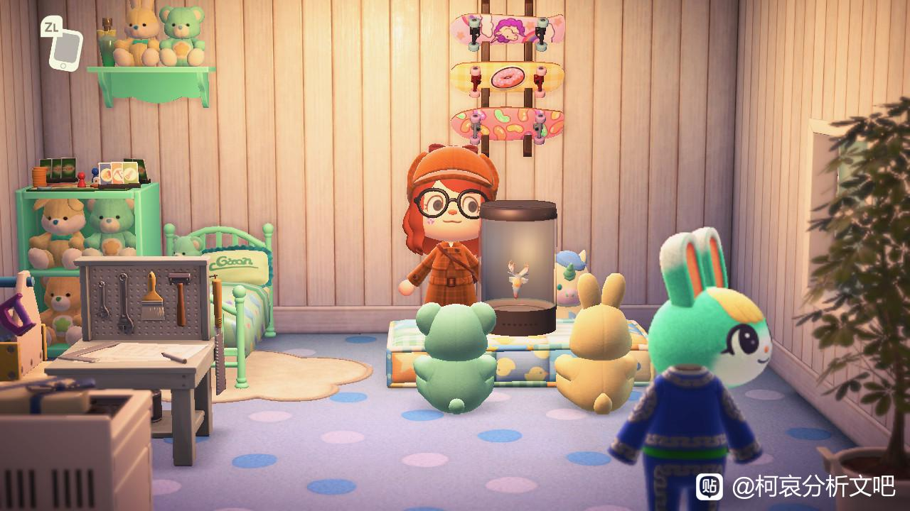
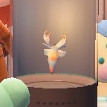
天使👼🏻？恶魔👿？
天使不是天使，天使的外表下包裹着恶魔的本性（）
而好巧不巧，海天使就偏偏出现在蜜雪儿（柯南）的房间里，难道青山真的是天才？
天使不是天使，天使的外表下包裹着恶魔的本性（）
而好巧不巧，海天使就偏偏出现在蜜雪儿（柯南）的房间里，难道青山真的是天才？
我觉得将海天使放在蜜雪儿的家里，首先由“海天使”这个名字很容易联想到小兰，“小兰”+“滑板”+“蜜雪儿的衣服”这就能推出蜜雪儿=柯南了，而“海天使”就很巧妙，天使外表伪装，却也能化身恶魔，得出 小兰=恶魔
动森里有很多小细节，我也不知道这样的推论是不是太牵强了，如果有问题可以随时指出，谢谢
再一点就是，海那边也有クリオネ悪魔（恶魔海天使）的说法，主要是海天使平常的状态头上也有两个恶魔角👿
合理
很有趣的分析，先膜拜一下
顶顶，这种说法好像是科学纪录片里的，我好像还看过，是地球脉动吗？
大概率是全球通用的，估计老贼看纪录片的时候看到了就用了，老贼休息的时候看来也在构思作品啊。
大概率是全球通用的，估计老贼看纪录片的时候看到了就用了，老贼休息的时候看来也在构思作品啊。
一开始柯南是不敢暴露，后来柯南是不敢暴露，开始是黑衣组织，后来是小兰
人设决定的，因为灰原哀的存在小兰不敢柯南＝新一，但一旦她实锤柯南＝新一，就会羞愧不已，暴跳如雷，做出不理智的恶魔的事
不牵强！非常好发现！
不牵强，是很好的佐证
老賊對毛利蘭的惡魔暗示也太多了一點，而且很喜歡在漫畫諷刺她的天使人設，絕對是想搞個大反轉驚呆讀者
2024-02-26 12:26 | NCC74656Voyage:我甚至觉得73有点极端了……好歹也是三十年名义女主吧，没必要整成恶魔吧？2024-02-26 20:44 | Chem_:回复 NCC74656Voyage :你可以理解为为了这个反转藏了三十年，多少人回顾巨人第一话发现艾伦爹的眼神藏了十年2024-02-26 21:04 | 世界上没有真理:回复 Chem_ :青山也說過哀與蘭是完全相反的，我們之間都認為是個性，搞不好也有暗指立場2024-04-29 05:07 | Angel哀ლ:不一定是主观的反派，大概率是无意中做了恶魔的事2024-04-29 05:08 | Angel哀ლ:比如泄密
回复 NCC74656Voyage :无意识的恶魔
顶
cy，可是我有点疑惑的是为什么这里的这个海天使就一定指小兰呢？求解答一下
2024-02-26 11:05 | 即将02的废物月:因为天使这个词近乎mll专属了已经2024-02-26 11:11 | 卷福花生酱酱酱:小兰被叫天使，且跟柯南住一起2024-02-26 11:12 | 光源刀:回复 即将02的废物月 :可是宫野艾莲娜是被柯南钦定的真正的天使啊，我觉得这个推理是在这里的天使是明确指代毛利兰的前提下才能成立2024-02-26 11:13 | 光源刀:回复 卷福花生酱酱酱 :哦哦哦哦，懂了懂了，和柯南住在一起的天使不就只有一个嘛2024-02-26 11:25 | 贴吧用户_QA767GX:回复 光源刀 :或者说是，青山既然要做暗示，那一定需要一个能让人联想到小兰的东西，动森里既和小兰有关，又能暗示恶魔，再者能和蜜雪儿（柯南）同处一个空间的，海天使是最合适的吧！当然你的想法也很合理，和柯南住在一起的天使就一个嘛2024-02-26 11:28 | 光源刀:回复 贴吧用户_QA767GX :你很厉害，找出海天使这个盲点

这个海天使的考察有一定挖掘的价值。当然我觉得作为satan论的证据的话，还是太软了，不如说，动森的家具证据确实能一定程度对应，但很难作证。
2024-02-26 11:29 | 贴吧用户_QA767GX:是的是的，就是给蜜雪儿=柯南再加个佐证2024-02-27 00:38 | bearaven:作为孤证是比较软，但是结合satan论的其他考察，比如666话封面是angel fish，比如金星符号，比如作品里提到的天使变恶魔，那就不同了
emmm我觉得可以当一种参考，但是还不够作为撒旦论的佐证。
最主要的是“海天使=恶魔”这个观点并非来自青山本人，如果要认定青山有这个比喻的意思，那还需要补充论证一下“海天使＝恶魔”这个观点的“足够公认”。
最主要的是“海天使=恶魔”这个观点并非来自青山本人，如果要认定青山有这个比喻的意思，那还需要补充论证一下“海天使＝恶魔”这个观点的“足够公认”。
2024-02-26 21:10 | 世界上没有真理:估狗海天使 惡魔 出現一大堆資料還有新聞，都說外表像天使，但是捕食獵物時相當殘忍，所以有個外號叫海洋惡魔，我認為樓主的論證有可信度2024-02-27 00:36 | bearaven:但是，不只用了一次呢。漫画666话这个能联想到satan的数字封面，就是angel fish ，同样是联想到水和天使的，这个也是吧友发现的 为什么是水/海这个符号呢。我想是因为《维纳斯的诞生》，泡沫
@鄙人是▫ 海天使在这里
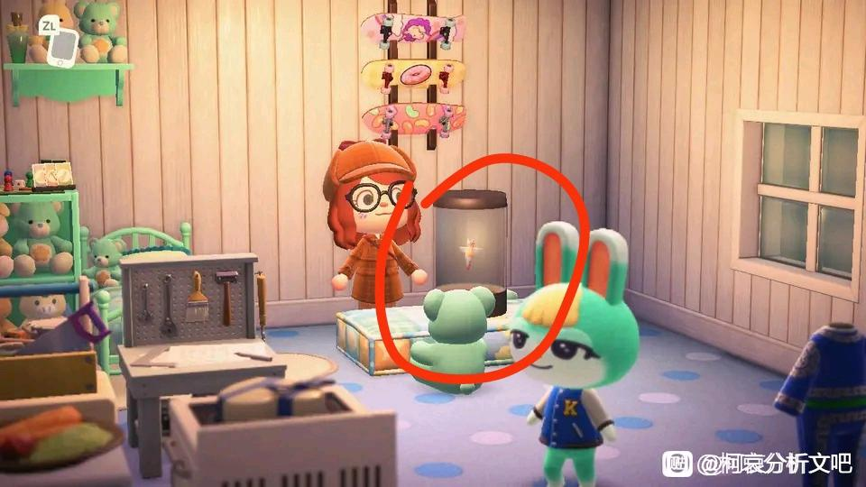
海天使是中文的叫法，英文和日文里是没有天使的意思。其次，动森里存在小动物委托你抓某个海洋生物或者昆虫的任务，拿到了之后也有可能被小动物装饰在家里。所以我倾向于这个属于想太多了。
2024-02-26 23:39 | 未松君:直接没有，但是海天使在日本也被叫流氷の天使的2024-02-26 23:43 | 贴吧用户_QA767GX:我想到这个问题了，所以我去找了海那边动森对海天使的说法，可以看看我的新评论2024-02-26 23:56 | 世界上没有真理:查了一下日本叫流氷の天使 ，會出現在北海道沿岸
我在外网找到了别人抓到海天使时的表述，所以在抓到的时候就会说到“ちょっと 天使な気分”（有点天使的感觉）直接证明这个说法在日本是有的，而且一抓到就能看到的表述
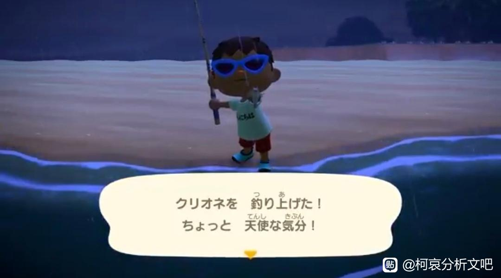
2024-02-27 00:22 | 雪团子oO:那我海天使确实能这么解释。但问题是要联系到小兰不应该直接放在红桃的屋子里吗？不用放在蜜雪儿的屋子里呀。2024-02-27 00:30 | 贴吧用户_QA767GX:回复 雪团子oO :我觉得一种可能是，小兰跟柯南住在毛利侦探事务所，所以放在一起，作为互相辅助的提醒；另外一种是，把这个放在小兰家里，青山或许会担心暗示性太明显？当然了，动森毕竟只是动森，都只是推论啦
再者是这个博物馆的介绍，“冰海天使”这个称呼也是直译的。至于是不是小动物给的任务去抓这个海天使，我的想法是，想不想做这个任务也是很主观的，我不能证明青山是不是无意，自然也不能证明青山是不是有意因为不管是哪种情况，青山让蜜雪儿家里出现海天使这个结局没有变
因为不管是哪种情况，青山让蜜雪儿家里出现海天使这个结局没有变
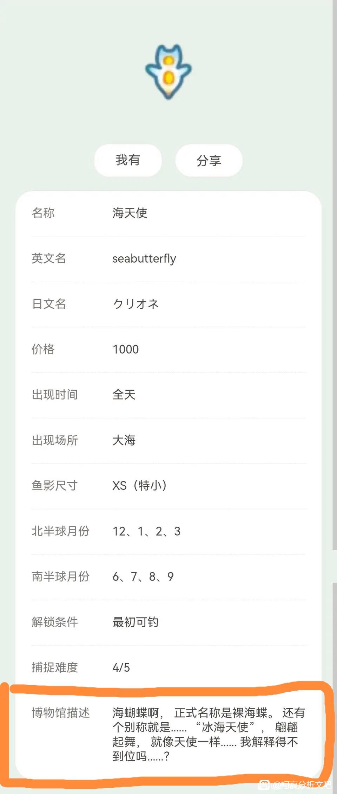
啊！海天使这里当时我在蜜雪儿也注意到了，不过前面分析双兔的时候，我还没那么肯定小兰satan论，就给略过了，感谢楼主补充！双兔+Santan论的含金量还在上升
2024-02-27 00:13 | 贴吧用户_QA767GX:Kuroneko66老师！该感谢的人是我
我怎么觉得在柯哀这里是可以得出这结论，但到了SR那边又会变成：这是柯南最后跟小兰走到最后结局的暗示，他们是一对这种说法。所以我现阶段选择看戏
2024-02-27 02:05 | 世界上没有真理:這跟cp無關，明顯是跟毛利蘭的人設設定有關，這天使其實惡魔說法不是空穴來風，漫畫裡都有青山在陰陽怪氣毛利蘭了2024-02-27 02:06 | 世界上没有真理:回复 贴吧用户_QZV6M6P :還有新蘭不用暗示，因為他們現階段就是情侶，幾乎大部份讀者都認為他們結局會在一起2024-02-27 02:21 | 贴吧用户_QZV6M6P:所以我说，两边都会有各自有利的说辞与想法，
和望夫石的刻板印象不同，兰其实是猎食者呢。选海天使这个符号很恰当。
关于将冰海天使和恶魔相关联这个说法，在ニコニコ上面有一个将近40万播放量的视频，这个说法热度是很高的。
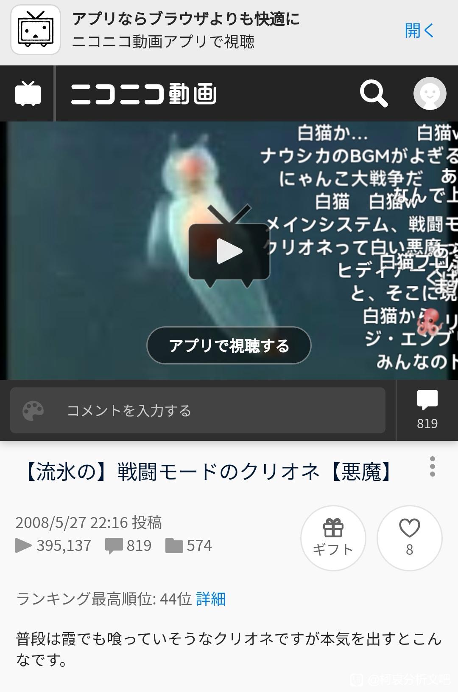
2024-02-27 02:22 | 贴吧用户_QZV6M6P:皇家翻译何在，朕的2024-02-27 08:32 | bearaven:【流冰的】战斗模式的海天使【恶魔】 平时看上去好像连雾也会吃的海天使 认真起来就会是这样。

【Satan论】关于第666话的天使梗 孤证比较软的话，联系成符号网络看就不同了。从不同的细节出发可以得到同样的符号暗示，都可以互相呼应
2024-02-27 02:10 | 世界上没有真理:這符號暗示越來越多，看來毛利蘭是撒旦真跑不掉了！青山是準備整大活了
兰人设黑化还挺带感的，而且现在也流行黑化，真要这样我可就是恶魔兰兰粉了